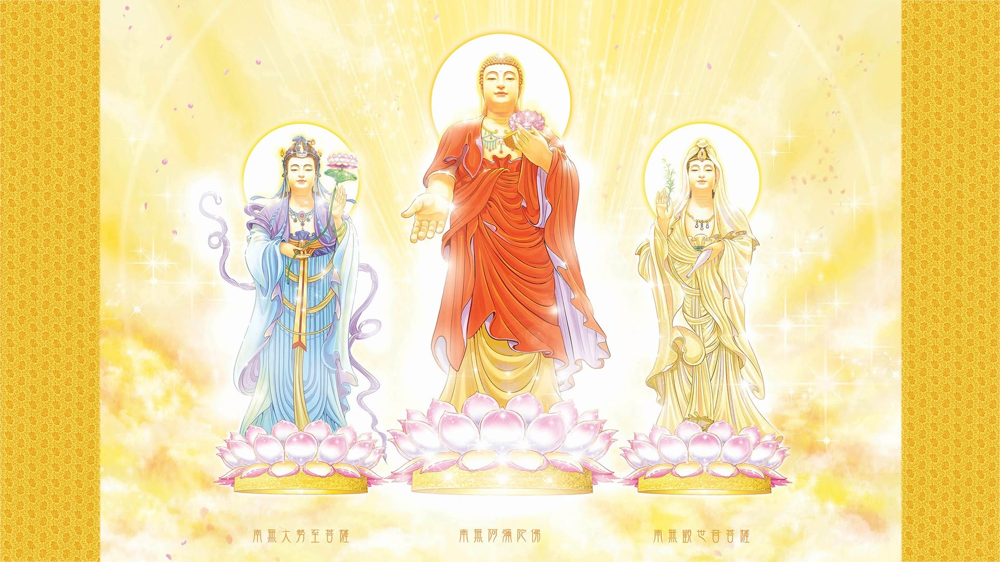
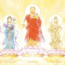

← 回 TaiGuangLin 主站
Tai 師父音檔串流
共
0
個音檔 · 點擊播放即時串流（無需下載）
類別
舊→新
新→舊
大悲咒
置頂
關螢幕可持續循環
用手機播放後可關掉螢幕；請維持瀏覽器在背景、勿強制結束分頁。清單循環請用 Chrome / Edge / Firefox（Safari 對 Opus 與背景切歌支援較差）。
一般版 · 單曲循環
快速版 · 單曲循環
兩版清單循環
停止

▶
0:00 / 0:00
選擇上方模式開始播放

正在播放
—
停止